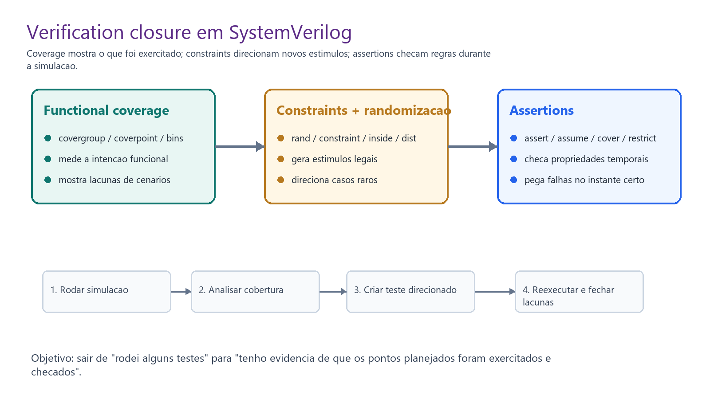
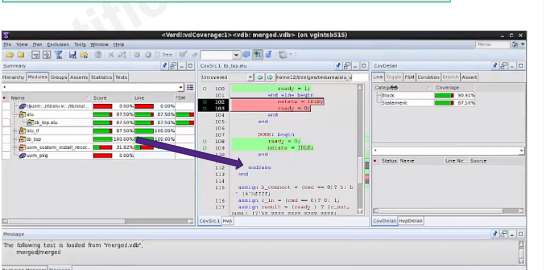
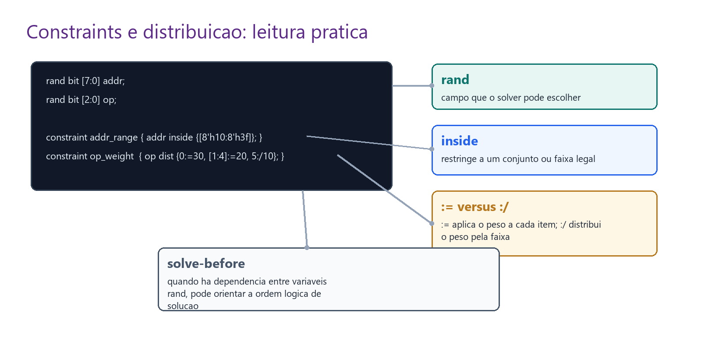

Ideia central
A aula anterior montou a arquitetura do testbench. Esta aula responde a pergunta seguinte: depois de gerar estímulos, aplicar no DUT, monitorar e comparar, como saber se o teste foi suficiente?
Rodar uma simulação sem medir cobertura é como experimentar alguns exemplos e torcer para que eles representem o sistema inteiro. Em projetos reais, essa confiança precisa virar evidência.

Coverage: medir o que foi exercitado
Coverage não prova sozinha que o design está correto. Ela mede progresso. Se um ponto nunca foi exercitado, você não tem evidência sobre aquele comportamento. Por isso, coverage é uma ferramenta de decisão: ela indica onde criar o próximo teste.
| Tipo | O que mede | Exemplo de lacuna |
|---|---|---|
| Line coverage | Statements executados. | Um ramo nunca chegou a executar. |
| Toggle coverage | Bits que alternaram 0→1 ou 1→0. | Um sinal ficou preso ou nunca foi estimulado. |
| Condition coverage | Subexpressões dentro de condicionais. | Um termo de valid && ready && !full nunca variou. |
| Branch coverage | Ramos de if, case e controle. | O else ou um item de case nunca foi tomado. |
| FSM coverage | Estados e transições legais. | Um estado de erro ou uma transição rara nunca foi visitada. |
Functional coverage, covergroups e bins
Functional coverage é definida por você. Ela transforma objetivos de verificação em pontos observáveis.
Em SystemVerilog, a estrutura típica é covergroup, coverpoint e bins.
class Test;
rand bit [3:0] my_reg1;
rand bit [2:0] my_reg2;
covergroup MyCovGrp;
coverpoint my_reg1 {
bins zero = {0};
bins low_range = {[1:3]};
bins mid = {[4:5]};
bins rest = default;
}
coverpoint my_reg2;
endgroup
endclass
O covergroup representa uma feature ou conjunto de objetivos. O coverpoint
observa uma variável ou expressão. Os bins dizem quais valores ou faixas contam como metas.
Cross coverage aparece quando cobrir variáveis separadas não basta. Talvez você tenha coberto pacotes grandes e também porta B, mas nunca pacotes grandes na porta B. O cross captura essa combinação.
covergroup PacketCov;
cp_size : coverpoint size {
bins small = {[1:15]};
bins medium = {[16:127]};
bins large = {[128:255]};
}
cp_port : coverpoint port {
bins port_a = {0};
bins port_b = {1};
}
size_x_port : cross cp_size, cp_port;
endgroupVCS e Verdi
O slide mostra que a coleta de coverage costuma estar desligada por padrão. Ela precisa ser habilitada no simulador. Em VCS, a forma apresentada foi:
vcs -cm line|cond|fsm|tgl|branch|assertDepois da simulação, o Verdi abre a base de cobertura:
verdi -cov -covdir my_test.vdb
A parte importante para o laboratório é perceber que coverage muda o próximo passo. Se um bin ficou vermelho, a pergunta não é “por que a ferramenta reclamou?”, mas sim: qual estímulo preciso criar para cobrir esse caso?
Constraints e randomização
Directed tests continuam úteis, mas não escalam para todos os cantos de um sistema digital complexo. Constraint random verification usa randomização dentro de limites legais. A ideia é gerar variedade sem gerar lixo.
class downstream_data;
rand bit [7:0] addr;
rand bit [7:0] data;
constraint addr_range {
addr <= 8'h0B;
}
endclass
Aqui addr é randomizado, mas o solver só pode escolher valores que obedecem à constraint.
Sem essa restrição, o testbench poderia criar endereços que não pertencem ao cenário que você quer verificar.

O operador inside
inside restringe uma variável a uma lista de valores ou faixas.
constraint legal_addr {
addr inside {[8'h10:8'h3F]};
}
Leitura: addr deve ficar entre 0x10 e 0x3F.
Para excluir uma faixa, usa-se a negação:
constraint avoid_reserved {
!(addr inside {[8'h80:8'h8F]});
}Isso aparece em endereços reservados, opcodes ilegais, modos proibidos e regiões de memória que não devem ser acessadas.
Weighted distribution: dist, := e :/
O operador dist não define apenas legalidade. Ele altera probabilidade.
Isso é importante porque randomização uniforme nem sempre testa bem casos raros.
rand bit [2:0] typical;
constraint u_dist {
typical dist { 0:=30, [1:4]:=20, 5:=40, 7:=10 };
}
Com :=, o peso é aplicado a cada item. Portanto, na faixa [1:4]:=20,
cada valor da faixa recebe peso 20.
constraint u_dist {
typical dist { 0:/30, [1:4]:/40, 5:/10, 7:/10 };
}
Com :/, o peso é distribuído pela faixa. Portanto, [1:4]:/40
reparte o peso total 40 pelos quatro valores.
randc, solve-before e constraints estáticas
rand permite que o solver escolha valores. randc é random cyclic:
tenta percorrer os valores possíveis antes de repetir. Isso ajuda quando você quer variedade mais uniforme,
por exemplo em opcodes ou seletores pequenos.
solve-before orienta a ordem lógica quando uma variável influencia outra.
rand bit [1:0] kind;
rand bit [7:0] data;
constraint c_kind {
kind dist {0:=80, 1:=20};
}
constraint c_data {
if (kind == 0)
data inside {[0:15]};
else
data inside {[200:255]};
}
constraint c_order {
solve kind before data;
}
Constraints também podem ser estáticas, ou desligadas com constraint_mode().
Isso permite reutilizar a mesma classe em cenários normais e cenários de erro.
pkt.addr_range.constraint_mode(0); // desliga
assert(pkt.randomize());
pkt.addr_range.constraint_mode(1); // religaConstraints para particionar memória
O slide 09 mostra um exemplo mais realista: sortear blocos dentro de uma RAM. Isso ensina que constraint não é apenas “menor que X”; ela pode expressar relações entre campos.
class MemoryBlock;
bit [31:0] m_ram_start;
bit [31:0] m_ram_end;
rand bit [31:0] m_start_addr;
rand bit [31:0] m_end_addr;
rand int m_block_size;
constraint c_addr {
m_start_addr > m_ram_start;
m_start_addr < m_ram_end;
m_end_addr == m_start_addr + m_block_size - 1;
}
constraint c_blk_size {
m_block_size inside {64, 128, 512};
}
endclassEm um projeto de processador, a mesma ideia pode gerar acessos alinhados, desalinhados, dentro de região, fora de região, perto de fronteira ou cruzando limites de bloco.
Assertions
Assertions checam propriedades do design. Se coverage pergunta “isso aconteceu?”, assertion pergunta “quando isso aconteceu, a regra foi obedecida?”.
| Tipo | Papel |
|---|---|
assert | Exige que uma propriedade seja verdadeira na simulação. |
assume | Declara uma suposição, principalmente para verificação formal. |
cover | Mede se uma propriedade aconteceu. |
restrict | Restringe computações formais e é ignorado por simuladores. |
Immediate assertions são checadas quando a linha executa. Concurrent assertions são temporais e geralmente amostradas por clock.
property p_ack;
@(posedge clk) req |-> ##[1:2] ack;
endproperty
assert property (p_ack);
Leitura: se req ocorrer, ack deve ocorrer de 1 a 2 ciclos depois.
O operador |-> é uma implicação temporal; ##[1:2] representa a janela de ciclos.
Quizzes explicados
pushes.
O generator é produtor: cria transações e faz put na mailbox.
pops.
O driver é consumidor: faz get da mailbox e transforma o item em sinais.
:=.
No slide, := aparece como operador de distribuição ponderada em dist.
find_last() and max(), which requires with?
find_last().
Busca precisa de critério. max() já sabe que deve procurar o maior valor.
>, <, <=, >= in expressions.
True, no contexto simplificado do quiz.
Para uso prático, lembre que constraints SystemVerilog também usam inside, dist, ranges e outros recursos.
Como isso entra no projeto
No ambiente do professor, procure sinais deste bloco nos scripts e Makefiles. Se aparecer -cm,
o fluxo está coletando coverage. Se aparecerem classes com rand e constraint,
o testbench provavelmente usa CRV. Se aparecerem assert property, o ambiente está checando
regras automaticamente.
- Coverage deve orientar novos testes, não ser apenas porcentagem decorativa.
- Constraints definem o espaço legal e estratégico da randomização.
- Distribuições ponderadas ajudam a atingir casos raros e fronteiras.
- Assertions devem ser entendidas antes de serem desabilitadas.
- Verdi ajuda a transformar coverage em ação concreta.
Base Markdown: aula didática, texto extraído, cobertura slide a slide.